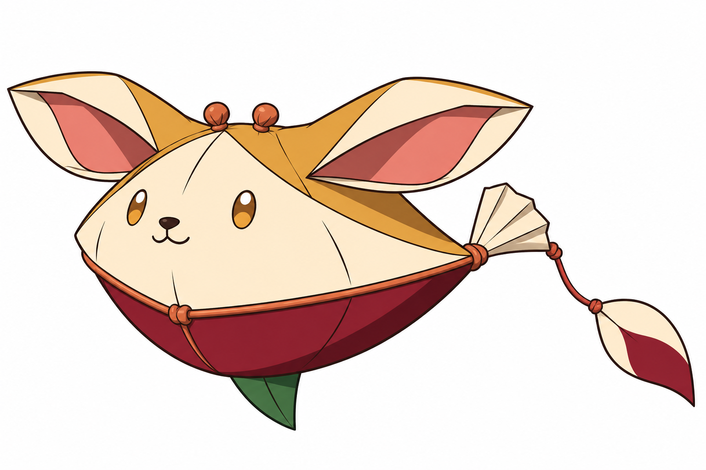
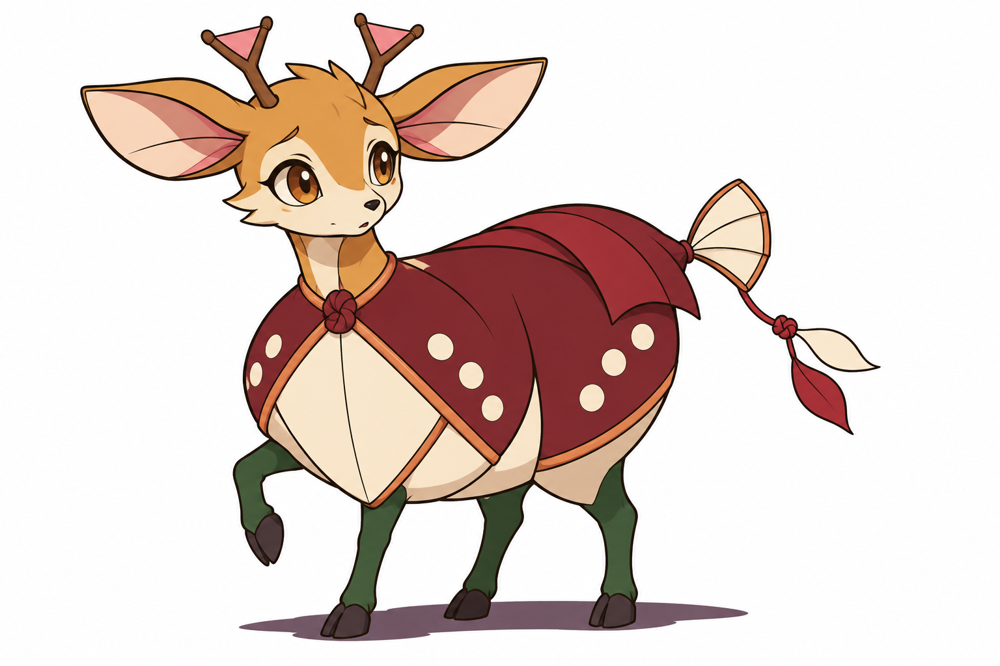
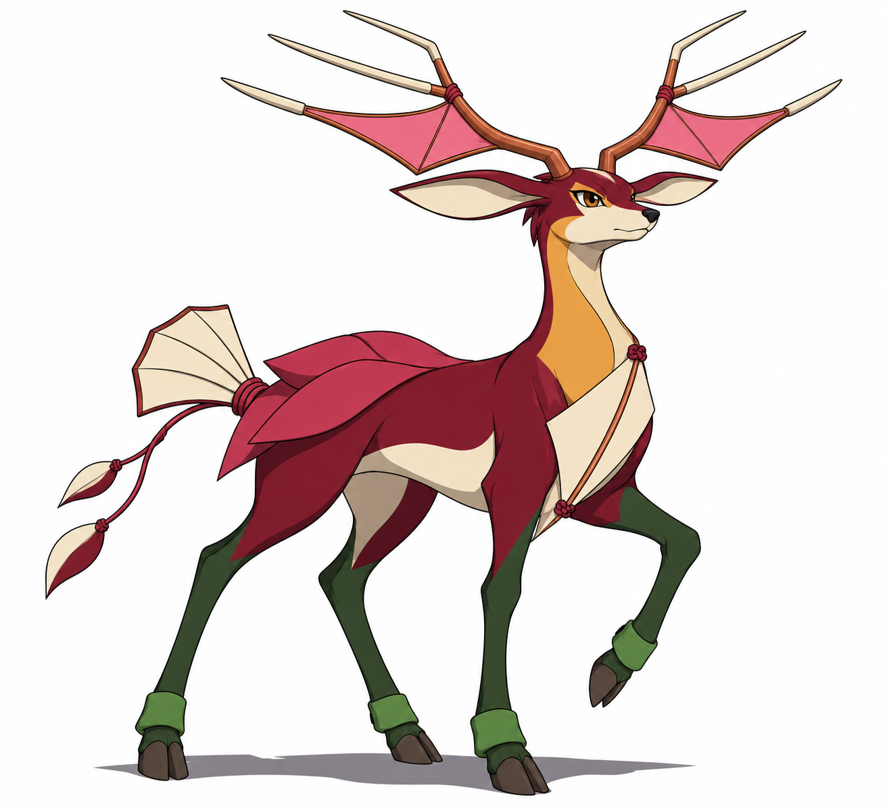
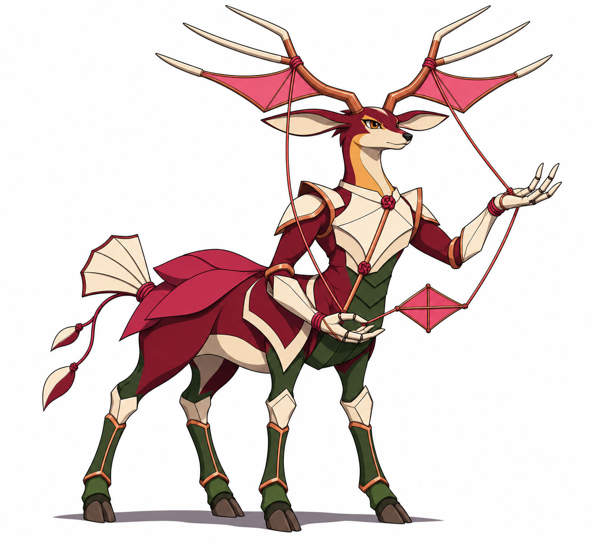

Brotim · Bebê

Orelhas estabilizam seu corpo enquanto aprende a seguir a linha.
Ação: Sentir a corrente
Limitação proposta: Sem apoios para se fixar ao chão.
BriefQuatro conceitos propostos. Sem integração.
Decisões e pesquisa · Fontes · Comparativo
Orelhas estabilizam seu corpo enquanto aprende a seguir a linha.
Ação: Sentir a corrente
Limitação proposta: Sem apoios para se fixar ao chão.
Brief
Primeiros apoios dão coragem para explorar sem perder o grupo.
Ação: Encontrar um caminho
Limitação proposta: As galhadas pequenas sustentam pouca tensão.
Brief
De seguir trilhas passa a indicar caminhos com a tensão das linhas.
Ação: Orientar a passagem
Limitação proposta: A largura da armação dificulta passagens estreitas.
Brief
Usa mãos e galhadas para coordenar linhas e ajudar outros a atravessar.
Ação: Tecer uma passagem
Limitação proposta: Tecelagem exige quatro apoios e interrompe a marcha.
Brief